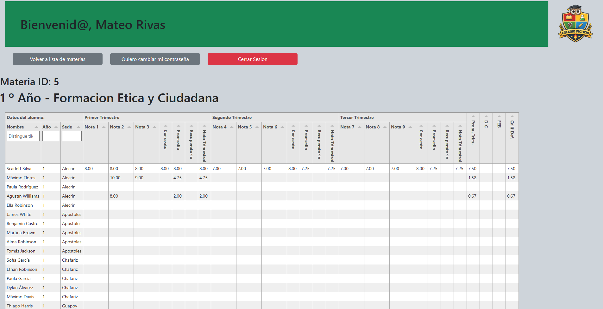
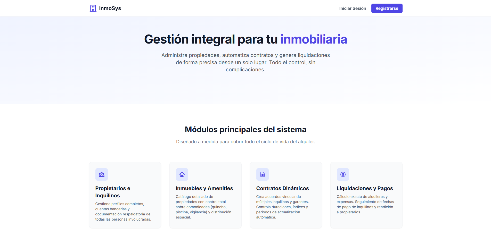
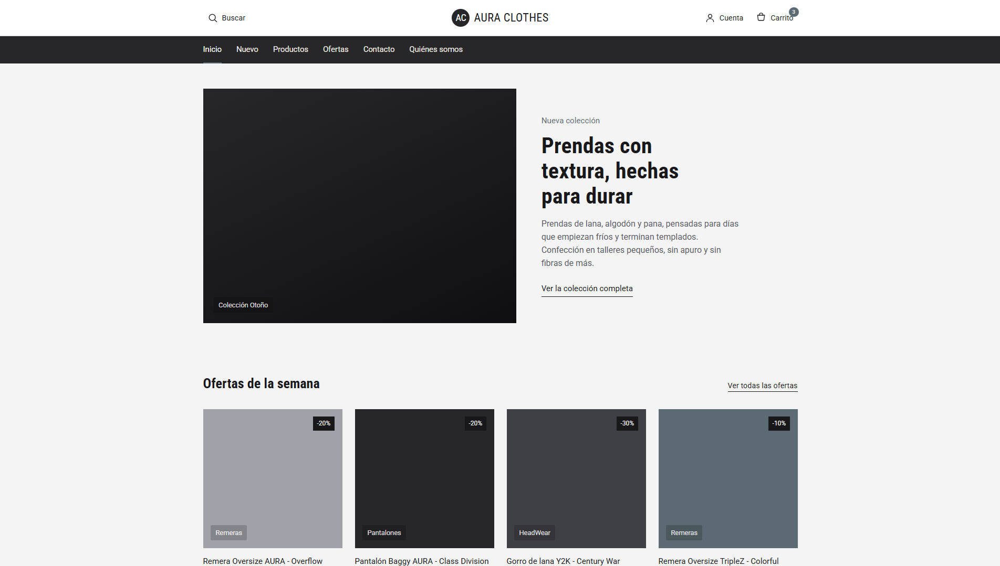
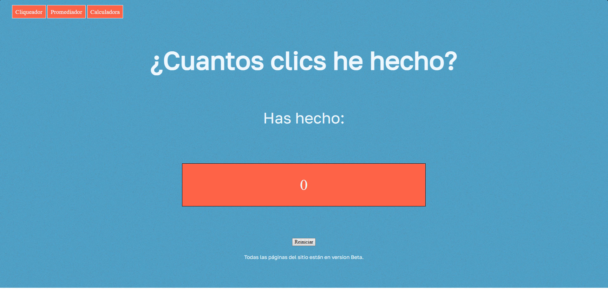

Plataforma orientada al manejo de planillas de calificaciones de estudiantes, gestion de la informacion academica y elaboracion de diplomas y boletines escolares

Ir al repositorioWebApp para la gestión de inmuebles y alquileres. Relaciona datos de propietarios, inquilinos, propiedades y contratos. Con alertas y calculos automaticos sobre actualizaciones de aranceles

Ir al repositorioPlataforma de comercio electrónico para la venta de ropa y accesorios, con funcionalidades de gestión de inventario y procesamiento de pagos. [EN PROCESO]

Ir al repositorioPagina desarrollada hace varios años para poner en practica conceptos de HTML, CSS y Javascript. Consiste en un contador de clics

Ir a la webCalculadora desarrollada para poner en practica conceptos de HTML, CSS y Javascript
Ir a la web